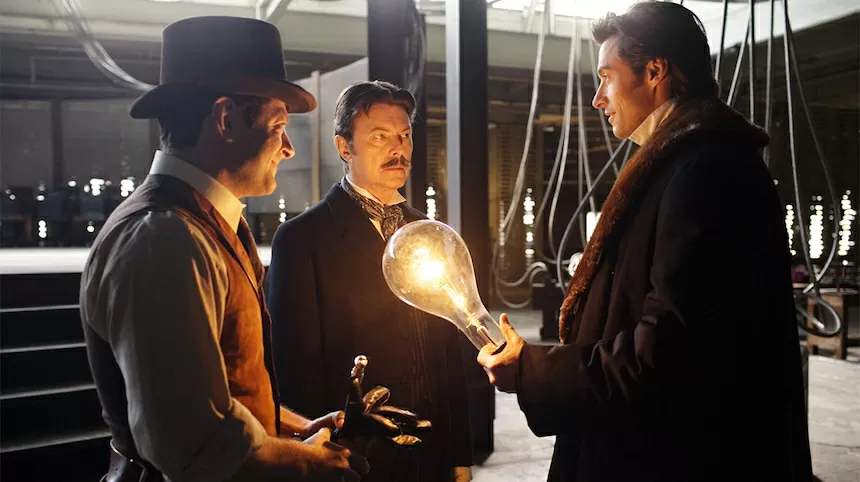
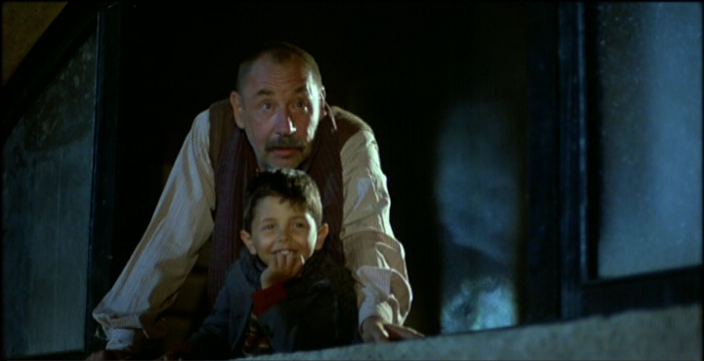
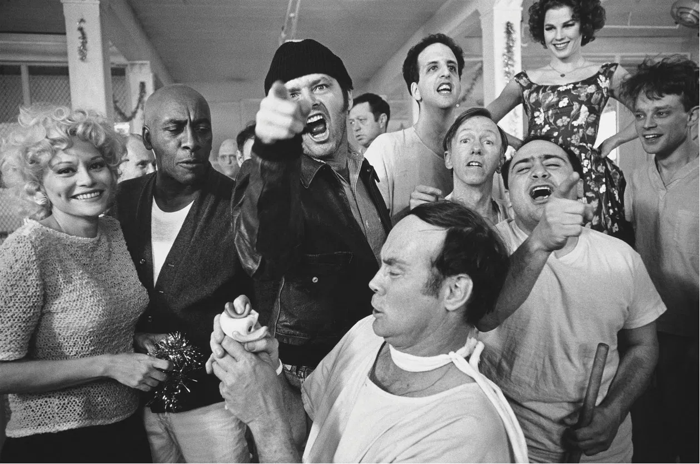
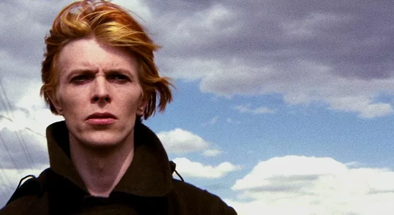

1.
The Prestige
2006
The Prestige è un film del 2006 di genere Drammatico/Mistero/Fantascienza,
diretto da Christopher Nolan, con Hugh Jackman, Christian Bale, Michael Caine, Scarlett Johansson, Rebecca Hall, David Bowie. Due giovani maghi apprendisti, Robert Angier e Alfred Borden, vengono istruiti e seguiti da Cutter, un ingegnere illusionista ed ex mago, ma durante un numero in cui una donna viene legata e messa in una cassa di vetro piena d'acqua, qualcosa va storto e Angier incolperà l'amico dell'accaduto, tentando di vendicarsi. Inizia così un crudele gioco tra i due uomini su chi sia il migliore e la rivalità si trasformerà pian piano in ossessione.

2.
Nuovo Cinema Paradiso
1988
Nuovo Cinema Paradiso è un film del 1988 scritto e diretto da Giuseppe Tornatore. Il film racconta in flashback la vita di Salvatore, un regista cinematografico di successo ma infelice che non è mai ritornato al paese siciliano in cui è cresciuto. La notizia della morte di Alfredo, proiezionista nel cinema del paese nonché suo mentore professionale e amico di una vita, diventa per Salvatore l'occasione per ripercorrere la sua formazione e la sua vita e trovare il coraggio di tornare nelle sue terre.

3.
A Beautiful Mind
2001
Studi, imprese, malattia e trionfo del matematico USA John Forbes Nash, premio Nobel 1994 per l'economia. Il ritratto di un uomo eccentrico, e anticonformista, il cui grande talento fu afflitto per molti anni da una grave forma di schizofrenia.
4.
One Flew Over the Cuckoo's Nest
1976
Qualcuno volò sul nido del cuculo (One Flew Over the Cuckoo's Nest) è un film del 1975 diretto da Miloš Forman. Dopo una condanna Murphy arriva in un ospedale psichiatrico e cerca di farsi passare per matto con un obiettivo in testa: la fuga. Ma la capo infermiera non la pensa come lui. Suo prezioso alleato un gigantesco pellerossa da tutti creduto sordomuto.

5.
The Man Who Fell to Earth
1976
L'uomo che cadde sulla Terra (The Man Who Fell to Earth) è un film del 1976 diretto da Nicolas Roeg.
Pellicola di fantascienza il cui soggetto è tratto dall'omonimo romanzo di Walter Tevis.
Il ruolo di protagonista è ricoperto dal cantante rock inglese David Bowie, al suo esordio nella recitazione. L'extraterrestre Thomas Jerome Newtown scende sulla Terra in cerca di acqua per salvare il proprio pianeta e diventa un magnate industriale.
